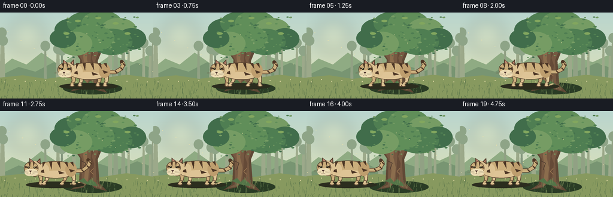
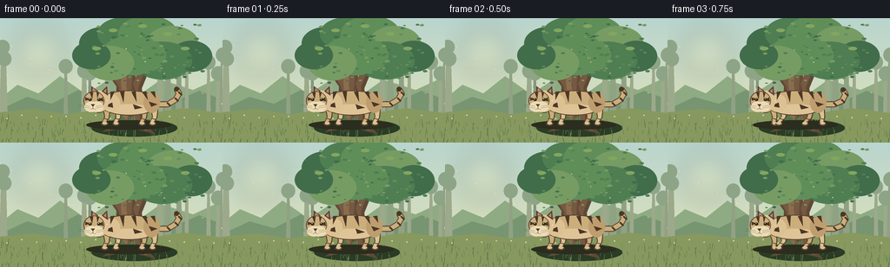
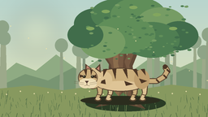
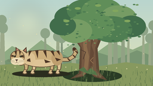

CODING AGENTS AS PIXEL WORLD MODELS
traex/GPT-5.6-Sol · instance_preservation_0055
点击播放 · 原生 RGB 像素
逐轮保存的候选
回放视频、检查图与代码变化。
每份候选均可单独播放。实际图片检查记录在下方工具轨迹中。
候选 01播放与检查图
点击播放 · 原生 RGB 像素


展开代码变化
--- 上一保存版本
+++ 本次保存版本
@@ -0,0 +1,215 @@
+from pathlib import Path
+import math, json
+import numpy as np
+from PIL import Image, ImageDraw, ImageFilter
+import artifact_io
+
+CASE_DIR = Path(__file__).resolve().parent
+SPEC = json.loads((CASE_DIR/'task_spec.json').read_text())
+W,H,N,FPS = SPEC['width'],SPEC['height'],SPEC['frames'],SPEC['fps']
+S=4
+rng=np.random.default_rng(5501)
+
+def C(hexstr):
+ h=hexstr.lstrip('#'); return tuple(int(h[i:i+2],16) for i in (0,2,4))
+
+def scbox(b): return tuple(int(round(v*S)) for v in b)
+def pts(p): return [(int(round(x*S)),int(round(y*S))) for x,y in p]
+
+def ellipse(d, box, fill, outline=None, width=1): d.ellipse(scbox(box),fill=fill,outline=outline,width=width*S)
+def polygon(d, xy, fill): d.polygon(pts(xy),fill=fill)
+def line(d, xy, fill, width, joint='curve'): d.line(pts(xy),fill=fill,width=max(1,int(width*S)),joint=joint)
+
+def gradient_background():
+ im=Image.new('RGB',(W*S,H*S))
+ a=np.zeros((H*S,W*S,3),dtype=np.uint8)
+ top=np.array(C('#b9d5ce')); mid=np.array(C('#d7dfbd')); bot=np.array(C('#9daa72'))
+ for y in range(H*S):
+ yy=y/(H*S-1)
+ if yy<.70:
+ t=yy/.70; col=top*(1-t)+mid*t
+ else:
+ t=(yy-.70)/.30; col=mid*(1-t)+bot*t
+ a[y,:,:]=col
+ return Image.fromarray(a)
+
+# fixed decorative placement, generated once
+back_trees=[]
+for i in range(16):
+ x=float(rng.uniform(-8,264)); w=float(rng.uniform(2.0,5.0)); top=float(rng.uniform(24,63))
+ col=rng.choice(['#91a184','#9ca98a','#84977e'])
+ back_trees.append((x,w,top,col))
+leaf_specks=[]
+for i in range(110):
+ leaf_specks.append((float(rng.uniform(105,234)),float(rng.uniform(4,76)),float(rng.uniform(0.7,2.0)),int(rng.integers(0,4))))
+grass=[]
+for i in range(180):
+ x=float(rng.uniform(0,256)); y=float(rng.uniform(119,144)); h=float(rng.uniform(2,10))
+ grass.append((x,y,h,float(rng.uniform(-2,2)),int(rng.integers(0,4))))
+
+TREE_LEAF=['#416d4b','#4f7e52','#608e59','#769c64']
+GRASS=['#607a4d','#738b56','#89985f','#526e48']
+
+def draw_scene(frame):
+ im=gradient_background().convert('RGBA'); d=ImageDraw.Draw(im)
+ # hazy sun rays and sky glow
+ glow=Image.new('RGBA',im.size,(0,0,0,0)); gd=ImageDraw.Draw(glow)
+ ellipse(gd,(16,10,74,68),(248,235,175,46))
+ glow=glow.filter(ImageFilter.GaussianBlur(13*S)); im=Image.alpha_composite(im,glow); d=ImageDraw.Draw(im)
+ # distant hills
+ polygon(d,[(-5,97),(20,77),(44,87),(69,67),(99,88),(126,70),(157,91),(185,71),(222,83),(261,65),(261,121),(-5,121)],'#8fab83')
+ polygon(d,[(-5,108),(31,91),(59,99),(90,83),(126,101),(165,88),(197,98),(229,84),(261,96),(261,123),(-5,123)],'#789572')
+ # misty background trunks
+ for x,w,top,col in back_trees:
+ polygon(d,[(x-w/2,top),(x+w/2,top),(x+w,121),(x-w,121)],col)
+ ellipse(d,(x-8,top-5,x+8,top+12),'#8ea487')
+ # far meadow strips
+ polygon(d,[(-2,109),(38,105),(77,111),(119,105),(164,111),(211,104),(258,110),(258,145),(-2,145)],'#87995f')
+ # little distant flowers
+ for x in range(8,256,17):
+ yy=114+2*math.sin(x*.21)
+ ellipse(d,(x-0.7,yy-0.7,x+0.7,yy+0.7),(226,218,167,180))
+ # tree ground shadow, behind trunk
+ ellipse(d,(105,117,204,137),(42,60,37,48))
+ # primary tree roots and trunk silhouette
+ trunk_dark='#604936'; trunk='#765942'; light='#8b6d4d'; hi='#9b7a55'
+ polygon(d,[(132,122),(117,132),(139,128),(148,119),(158,129),(179,134),(166,121),(163,81),(172,59),(165,56),(156,74),(154,39),(141,35),(139,69),(126,55),(120,59),(134,79)],trunk_dark)
+ polygon(d,[(136,123),(124,129),(141,126),(148,116),(156,126),(170,130),(161,118),(159,80),(167,59),(161,57),(153,76),(151,39),(143,37),(142,73),(129,57),(125,60),(137,80)],trunk)
+ # bark strips
+ polygon(d,[(143,39),(147,42),(145,78),(149,95),(146,119),(139,126),(142,100),(139,74)],light)
+ polygon(d,[(154,46),(158,57),(153,76),(157,88),(154,113),(149,118),(151,85)],'#654a37')
+ line(d,[(135,83),(143,87),(139,99)],'#4c3a2f',1.0)
+ line(d,[(156,96),(151,101),(156,106)],'#a17d56',0.8)
+ line(d,[(140,63),(146,66)],'#b08a5c',0.7)
+ # canopy branches
+ line(d,[(148,61),(132,39),(119,31)],trunk_dark,5)
+ line(d,[(156,63),(177,39),(194,31)],trunk_dark,5)
+ line(d,[(147,48),(157,25),(166,17)],trunk_dark,4)
+ # canopy clusters
+ clusters=[(119,29,28,19),(142,18,30,19),(170,18,34,21),(198,29,30,20),(220,44,24,18),(187,49,34,22),(153,43,38,23),(126,52,28,20),(105,43,22,16)]
+ for i,(cx,cy,rx,ry) in enumerate(clusters):
+ ellipse(d,(cx-rx,cy-ry,cx+rx,cy+ry),TREE_LEAF[i%len(TREE_LEAF)])
+ # scalloped highlights / individual leaves
+ for x,y,r,k in leaf_specks:
+ col=TREE_LEAF[k]
+ ellipse(d,(x-r*1.5,y-r*.7,x+r*1.5,y+r*.7),col)
+ # sunlight on canopy
+ for cx,cy in [(130,14),(164,9),(193,18),(111,35),(213,35)]:
+ ellipse(d,(cx-5,cy-2,cx+5,cy+2),(130,166,94,125))
+ # moss on tree
+ polygon(d,[(131,117),(140,112),(146,119),(151,114),(160,120),(163,126),(146,123)],'#547548')
+ # ground grass, behind tiger
+ for x,y,h,lean,k in grass:
+ col=GRASS[k]
+ line(d,[(x,y),(x+lean,y-h)],col,0.55)
+ # frame-dependent tiger
+ draw_tiger(im,frame)
+ # foreground blades for depth (small, don't hide subject)
+ d=ImageDraw.Draw(im)
+ for x in range(2,257,9):
+ hh=3+2.5*(.5+.5*math.sin(x*1.71))
+ line(d,[(x,144),(x+1.5*math.sin(x),144-hh)],'#536b43',0.75)
+ # tiny drifting pollen, gentle coherent animation
+ for j in range(12):
+ x=(13+j*22+frame*(.18+.02*j))%260
+ y=32+(j*13)%74+2*math.sin(frame*.2+j)
+ ellipse(d,(x-.45,y-.45,x+.45,y+.45),(242,228,169,135))
+ return im.convert('RGB').resize((W,H),Image.Resampling.LANCZOS)
+
+def draw_tiger(im, frame):
+ d=ImageDraw.Draw(im,'RGBA')
+ # pause, then smooth leftward walk, ending decisively left of tree
+ if frame <= 2: u=0.0
+ elif frame >= 16: u=1.0
+ else:
+ q=(frame-2)/14.0
+ u=q*q*(3-2*q)
+ cx=148-79*u
+ walking=(frame>2 and frame<17)
+ phase=(frame-2)*1.55
+ bob=(1.0*math.sin(phase*2) if walking else 0)
+ cy=0.4+bob
+ # elongated soft contact shadow conveys ground plane
+ shadow_alpha=78 if walking else 90
+ ellipse(d,(cx-49,118,cx+49,129),(43,45,30,shadow_alpha))
+ # dust motes behind moving paws
+ if walking and frame>5:
+ for j in range(3):
+ px=cx+29+j*5+2*math.sin(frame+j)
+ py=122-j*1.3
+ ellipse(d,(px-2.2,py-1.0,px+2.2,py+1.0),(202,184,131,35))
+ dark=(72,54,39,255); stripe=(77,55,38,255); beige=(203,174,124,255)
+ beige2=(220,194,147,255); cream=(236,220,181,255); outline=(88,67,48,255)
+ # tail behind the body, with recognizable dark bands
+ tailwave=math.sin(phase*.7)*2 if walking else 0
+ tail=[(cx+31,99+cy),(cx+45,99+cy),(cx+54,94+tailwave),(cx+58,87+tailwave*.6),(cx+55,82+tailwave*.4)]
+ line(d,tail,outline,7)
+ line(d,tail,beige,5.1)
+ for frac in (.48,.68,.86):
+ idx=int(frac*(len(tail)-1)); x,y=tail[idx]
+ line(d,[(x-1,y-2),(x+3,y+2)],stripe,2.0)
+ ellipse(d,(tail[-1][0]-2.8,tail[-1][1]-2.8,tail[-1][0]+2.8,tail[-1][1]+2.8),stripe)
+ # legs behind body, alternating gait
+ swings=[math.sin(phase),math.sin(phase+math.pi),math.sin(phase+math.pi),math.sin(phase)]
+ bases=[-25,-12,18,30]
+ for idx,bx in enumerate(bases):
+ sw=swings[idx]*(4.2 if walking else 0)
+ back=idx in (1,3)
+ col=beige2 if back else beige
+ # upper leg flowing into ankle
+ polygon(d,[(cx+bx-5,104+cy),(cx+bx+4,104+cy),(cx+bx+3+sw*.35,115),(cx+bx+sw-2,123),(cx+bx+sw-7,123),(cx+bx-3+sw*.35,114)],outline)
+ polygon(d,[(cx+bx-3.8,104+cy),(cx+bx+3,104+cy),(cx+bx+1.7+sw*.35,115),(cx+bx+sw-2.5,121.7),(cx+bx+sw-5.7,121.7),(cx+bx-2+sw*.35,114)],col)
+ ellipse(d,(cx+bx+sw-6.5,120,cx+bx+sw+1.4,124.5),outline)
+ ellipse(d,(cx+bx+sw-5.6,120,cx+bx+sw+.3,123),beige2)
+ # ankle stripe
+ line(d,[(cx+bx-3+sw*.65,116),(cx+bx+1+sw*.65,117)],stripe,1.2)
+ # body outline then warm coat
+ ellipse(d,(cx-35,83+cy,cx+36,112+cy),outline)
+ ellipse(d,(cx-34,84+cy,cx+35,110.5+cy),beige)
+ # belly highlight
+ ellipse(d,(cx-24,99+cy,cx+25,111+cy),(222,196,150,255))
+ # shoulder / haunch shaping
+ ellipse(d,(cx-31,87+cy,cx-10,108+cy),beige2)
+ ellipse(d,(cx+17,85+cy,cx+36,109+cy),(190,158,110,255))
+ # body tiger stripes (clear dark tapered wedges)
+ for bx,depth,lean in [(-18,10,-3),(-7,13,1),(6,12,3),(18,10,4),(28,8,3)]:
+ polygon(d,[(cx+bx-3,84.5+cy),(cx+bx+2,84+cy),(cx+bx+lean,84+depth+cy)],stripe)
+ # side stripes
+ polygon(d,[(cx+5,99+cy),(cx+16,103+cy),(cx+7,105+cy)],stripe)
+ polygon(d,[(cx+23,96+cy),(cx+33,99+cy),(cx+26,102+cy)],stripe)
+ polygon(d,[(cx-19,97+cy),(cx-28,101+cy),(cx-18,103+cy)],stripe)
+ # neck ruff and head (facing left)
+ ellipse(d,(cx-43,86+cy,cx-25,109+cy),outline)
+ ellipse(d,(cx-45,83+cy,cx-23,108+cy),beige2)
+ # ears with dark rims and pink inner
+ polygon(d,[(cx-43,87+cy),(cx-43,78+cy),(cx-35,84+cy)],outline)
+ polygon(d,[(cx-42,85+cy),(cx-41,80+cy),(cx-37,84+cy)],(191,133,112,255))
+ polygon(d,[(cx-31,84+cy),(cx-25,78+cy),(cx-24,89+cy)],outline)
+ polygon(d,[(cx-29,84+cy),(cx-26,81+cy),(cx-26,86+cy)],(191,133,112,255))
+ # forehead cap/head
+ ellipse(d,(cx-52,84+cy,cx-28,106+cy),outline)
+ ellipse(d,(cx-51,84.8+cy,cx-28.8,105.5+cy),beige)
+ # cheek and pale muzzle
+ ellipse(d,(cx-51,96+cy,cx-35,108+cy),cream)
+ ellipse(d,(cx-45,96+cy,cx-29,108+cy),cream)
+ # facial stripes
+ polygon(d,[(cx-45,85+cy),(cx-41,85+cy),(cx-42,93+cy)],stripe)
+ polygon(d,[(cx-37,84.5+cy),(cx-34,85+cy),(cx-36,92+cy)],stripe)
+ polygon(d,[(cx-50,91+cy),(cx-44,93+cy),(cx-50,95+cy)],stripe)
+ polygon(d,[(cx-30,91+cy),(cx-35,94+cy),(cx-29,96+cy)],stripe)
+ # eyes with small catchlights
+ ellipse(d,(cx-46.5,92+cy,cx-42.5,95.4+cy),(49,45,31,255))
+ ellipse(d,(cx-36.3,92+cy,cx-32.3,95.4+cy),(49,45,31,255))
+ ellipse(d,(cx-45.4,92.5+cy,cx-44.5,93.4+cy),(245,235,193,255))
+ ellipse(d,(cx-35.2,92.5+cy,cx-34.3,93.4+cy),(245,235,193,255))
+ # nose, mouth, whiskers
+ polygon(d,[(cx-43.5,99+cy),(cx-39,99+cy),(cx-41.2,102+cy)],(79,55,48,255))
+ line(d,[(cx-41.2,102+cy),(cx-41.2,104+cy),(cx-44,105+cy)],(89,63,49,255),.65)
+ line(d,[(cx-41.2,104+cy),(cx-38,105+cy)],(89,63,49,255),.65)
+ for off in (0,2):
+ line(d,[(cx-45,101.5+off+cy),(cx-57,99.5+off+cy)],(108,91,68,190),.45)
+ line(d,[(cx-37.5,101.5+off+cy),(cx-29,100+off+cy)],(108,91,68,150),.4)
+
+frames=np.stack([np.asarray(draw_scene(i),dtype=np.uint8) for i in range(N)])
+artifact_io.save(frames,CASE_DIR)
+print('saved',frames.shape,frames.dtype,'to',CASE_DIR)
可观测工具轨迹
实际执行的命令与返回图片。
命令 1exit 0
/bin/bash -lc "cat prompt.txt && printf '\\n---RULES---\\n' && cat GENERATION_RULES.md && printf '\\n---SPEC---\\n' && cat task_spec.json"
命令 2exit 0
/bin/bash -lc "find . -maxdepth 2 -type f -printf '%p\\n' | sort"
命令 3exit 0
/bin/bash -lc 'cat artifact_io.py'
命令 4exit 0
/bin/bash -lc "cat > generate.py <<'PY'
from pathlib import Path
import math, json
import numpy as np
from PIL import Image, ImageDraw, ImageFilter
import artifact_io
CASE_DIR = Path(__file__).resolve().parent
SPEC = json.loads((CASE_DIR/'task_spec.json').read_text())
W,H,N,FPS = SPEC['width'],SPEC['height'],SPEC['frames'],SPEC['fps']
S=4
rng=np.random.default_rng(5501)
def C(hexstr):
h=hexstr.lstrip('#'); return tuple(int(h[i:i+2],16) for i in (0,2,4))
def scbox(b): return tuple(int(round(v*S)) for v in b)
def pts(p): return [(int(round(x*S)),int(round(y*S))) for x,y in p]
def ellipse(d, box, fill, outline=None, width=1): d.ellipse(scbox(box),fill=fill,outline=outline,width=width*S)
def polygon(d, xy, fill): d.polygon(pts(xy),fill=fill)
def line(d, xy, fill, width, joint='curve'): d.line(pts(xy),fill=fill,width=max(1,int(width*S)),joint=joint)
def gradient_background():
im=Image.new('RGB',(W*S,H*S))
a=np.zeros((H*S,W*S,3),dtype=np.uint8)
top=np.array(C('#b9d5ce')); mid=np.array(C('#d7dfbd')); bot=np.array(C('#9daa72'))
for y in range(H*S):
yy=y/(H*S-1)
if yy<.70:
t=yy/.70; col=top*(1-t)+mid*t
else:
t=(yy-.70)/.30; col=mid*(1-t)+bot*t
a[y,:,:]=col
return Image.fromarray(a)
# fixed decorative placement, generated once
back_trees=[]
for i in range(16):
x=float(rng.uniform(-8,264)); w=float(rng.uniform(2.0,5.0)); top=float(rng.uniform(24,63))
col=rng.choice(['#91a184','#9ca98a','#84977e'])
back_trees.append((x,w,top,col))
leaf_specks=[]
for i in range(110):
leaf_specks.append((float(rng.uniform(105,234)),float(rng.uniform(4,76)),float(rng.uniform(0.7,2.0)),int(rng.integers(0,4))))
grass=[]
for i in range(180):
x=float(rng.uniform(0,256)); y=float(rng.uniform(119,144)); h=float(rng.uniform(2,10))
grass.append((x,y,h,float(rng.uniform(-2,2)),int(rng.integers(0,4))))
TREE_LEAF=['#416d4b','#4f7e52','#608e59','#769c64']
GRASS=['#607a4d','#738b56','#89985f','#526e48']
def draw_scene(frame):
im=gradient_background().convert('RGBA'); d=ImageDraw.Draw(im)
# hazy sun rays and sky glow
glow=Image.new('RGBA',im.size,(0,0,0,0)); gd=ImageDraw.Draw(glow)
ellipse(gd,(16,10,74,68),(248,235,175,46))
glow=glow.filter(ImageFilter.GaussianBlur(13*S)); im=Image.alpha_composite(im,glow); d=ImageDraw.Draw(im)
# distant hills
polygon(d,[(-5,97),(20,77),(44,87),(69,67),(99,88),(126,70),(157,91),(185,71),(222,83),(261,65),(261,121),(-5,121)],'#8fab83')
polygon(d,[(-5,108),(31,91),(59,99),(90,83),(126,101),(165,88),(197,98),(229,84),(261,96),(261,123),(-5,123)],'#789572')
# misty background trunks
for x,w,top,col in back_trees:
polygon(d,[(x-w/2,top),(x+w/2,top),(x+w,121),(x-w,121)],col)
ellipse(d,(x-8,top-5,x+8,top+12),'#8ea487')
# far meadow strips
polygon(d,[(-2,109),(38,105),(77,111),(119,105),(164,111),(211,104),(258,110),(258,145),(-2,145)],'#87995f')
# little distant flowers
for x in range(8,256,17):
yy=114+2*math.sin(x*.21)
ellipse(d,(x-0.7,yy-0.7,x+0.7,yy+0.7),(226,218,167,180))
# tree ground shadow, behind trunk
ellipse(d,(105,117,204,137),(42,60,37,48))
# primary tree roots and trunk silhouette
trunk_dark='#604936'; trunk='#765942'; light='#8b6d4d'; hi='#9b7a55'
polygon(d,[(132,122),(117,132),(139,128),(148,119),(158,129),(179,134),(166,121),(163,81),(172,59),(165,56),(156,74),(154,39),(141,35),(139,69),(126,55),(120,59),(134,79)],trunk_dark)
polygon(d,[(136,123),(124,129),(141,126),(148,116),(156,126),(170,130),(161,118),(159,80),(167,59),(161,57),(153,76),(151,39),(143,37),(142,73),(129,57),(125,60),(137,80)],trunk)
# bark strips
polygon(d,[(143,39),(147,42),(145,78),(149,95),(146,119),(139,126),(142,100),(139,74)],light)
polygon(d,[(154,46),(158,57),(153,76),(157,88),(154,113),(149,118),(151,85)],'#654a37')
line(d,[(135,83),(143,87),(139,99)],'#4c3a2f',1.0)
line(d,[(156,96),(151,101),(156,106)],'#a17d56',0.8)
line(d,[(140,63),(146,66)],'#b08a5c',0.7)
# canopy branches
line(d,[(148,61),(132,39),(119,31)],trunk_dark,5)
line(d,[(156,63),(177,39),(194,31)],trunk_dark,5)
line(d,[(147,48),(157,25),(166,17)],trunk_dark,4)
# canopy clusters
clusters=[(119,29,28,19),(142,18,30,19),(170,18,34,21),(198,29,30,20),(220,44,24,18),(187,49,34,22),(153,43,38,23),(126,52,28,20),(105,43,22,16)]
for i,(cx,cy,rx,ry) in enumerate(clusters):
ellipse(d,(cx-rx,cy-ry,cx+rx,cy+ry),TREE_LEAF[i%len(TREE_LEAF)])
# scalloped highlights / individual leaves
for x,y,r,k in leaf_specks:
col=TREE_LEAF[k]
ellipse(d,(x-r*1.5,y-r*.7,x+r*1.5,y+r*.7),col)
# sunlight on canopy
for cx,cy in [(130,14),(164,9),(193,18),(111,35),(213,35)]:
ellipse(d,(cx-5,cy-2,cx+5,cy+2),(130,166,94,125))
# moss on tree
polygon(d,[(131,117),(140,112),(146,119),(151,114),(160,120),(163,126),(146,123)],'#547548')
# ground grass, behind tiger
for x,y,h,lean,k in grass:
col=GRASS[k]
line(d,[(x,y),(x+lean,y-h)],col,0.55)
# frame-dependent tiger
draw_tiger(im,frame)
# foreground blades for depth (small, don't hide subject)
d=ImageDraw.Draw(im)
for x in range(2,257,9):
hh=3+2.5*(.5+.5*math.sin(x*1.71))
line(d,[(x,144),(x+1.5*math.sin(x),144-hh)],'#536b43',0.75)
# tiny drifting pollen, gentle coherent animation
for j in range(12):
x=(13+j*22+frame*(.18+.02*j))%260
y=32+(j*13)%74+2*math.sin(frame*.2+j)
ellipse(d,(x-.45,y-.45,x+.45,y+.45),(242,228,169,135))
return im.convert('RGB').resize((W,H),Image.Resampling.LANCZOS)
def draw_tiger(im, frame):
d=ImageDraw.Draw(im,'RGBA')
# pause, then smooth leftward walk, ending decisively left of tree
if frame <= 2: u=0.0
elif frame >= 16: u=1.0
else:
q=(frame-2)/14.0
u=q*q*(3-2*q)
cx=148-79*u
walking=(frame>2 and frame<17)
phase=(frame-2)*1.55
bob=(1.0*math.sin(phase*2) if walking else 0)
cy=0.4+bob
# elongated soft contact shadow conveys ground plane
shadow_alpha=78 if walking else 90
ellipse(d,(cx-49,118,cx+49,129),(43,45,30,shadow_alpha))
# dust motes behind moving paws
if walking and frame>5:
for j in range(3):
px=cx+29+j*5+2*math.sin(frame+j)
py=122-j*1.3
ellipse(d,(px-2.2,py-1.0,px+2.2,py+1.0),(202,184,131,35))
dark=(72,54,39,255); stripe=(77,55,38,255); beige=(203,174,124,255)
beige2=(220,194,147,255); cream=(236,220,181,255); outline=(88,67,48,255)
# tail behind the body, with recognizable dark bands
tailwave=math.sin(phase*.7)*2 if walking else 0
tail=[(cx+31,99+cy),(cx+45,99+cy),(cx+54,94+tailwave),(cx+58,87+tailwave*.6),(cx+55,82+tailwave*.4)]
line(d,tail,outline,7)
line(d,tail,beige,5.1)
for frac in (.48,.68,.86):
idx=int(frac*(len(tail)-1)); x,y=tail[idx]
line(d,[(x-1,y-2),(x+3,y+2)],stripe,2.0)
ellipse(d,(tail[-1][0]-2.8,tail[-1][1]-2.8,tail[-1][0]+2.8,tail[-1][1]+2.8),stripe)
# legs behind body, alternating gait
swings=[math.sin(phase),math.sin(phase+math.pi),math.sin(phase+math.pi),math.sin(phase)]
bases=[-25,-12,18,30]
for idx,bx in enumerate(bases):
sw=swings[idx]*(4.2 if walking else 0)
back=idx in (1,3)
col=beige2 if back else beige
# upper leg flowing into ankle
polygon(d,[(cx+bx-5,104+cy),(cx+bx+4,104+cy),(cx+bx+3+sw*.35,115),(cx+bx+sw-2,123),(cx+bx+sw-7,123),(cx+bx-3+sw*.35,114)],outline)
polygon(d,[(cx+bx-3.8,104+cy),(cx+bx+3,104+cy),(cx+bx+1.7+sw*.35,115),(cx+bx+sw-2.5,121.7),(cx+bx+sw-5.7,121.7),(cx+bx-2+sw*.35,114)],col)
ellipse(d,(cx+bx+sw-6.5,120,cx+bx+sw+1.4,124.5),outline)
ellipse(d,(cx+bx+sw-5.6,120,cx+bx+sw+.3,123),beige2)
# ankle stripe
line(d,[(cx+bx-3+sw*.65,116),(cx+bx+1+sw*.65,117)],stripe,1.2)
# body outline then warm coat
ellipse(d,(cx-35,83+cy,cx+36,112+cy),outline)
ellipse(d,(cx-34,84+cy,cx+35,110.5+cy),beige)
# belly highlight
ellipse(d,(cx-24,99+cy,cx+25,111+cy),(222,196,150,255))
# shoulder / haunch shaping
ellipse(d,(cx-31,87+cy,cx-10,108+cy),beige2)
ellipse(d,(cx+17,85+cy,cx+36,109+cy),(190,158,110,255))
# body tiger stripes (clear dark tapered wedges)
for bx,depth,lean in [(-18,10,-3),(-7,13,1),(6,12,3),(18,10,4),(28,8,3)]:
polygon(d,[(cx+bx-3,84.5+cy),(cx+bx+2,84+cy),(cx+bx+lean,84+depth+cy)],stripe)
# side stripes
polygon(d,[(cx+5,99+cy),(cx+16,103+cy),(cx+7,105+cy)],stripe)
polygon(d,[(cx+23,96+cy),(cx+33,99+cy),(cx+26,102+cy)],stripe)
polygon(d,[(cx-19,97+cy),(cx-28,101+cy),(cx-18,103+cy)],stripe)
# neck ruff and head (facing left)
ellipse(d,(cx-43,86+cy,cx-25,109+cy),outline)
ellipse(d,(cx-45,83+cy,cx-23,108+cy),beige2)
# ears with dark rims and pink inner
polygon(d,[(cx-43,87+cy),(cx-43,78+cy),(cx-35,84+cy)],outline)
polygon(d,[(cx-42,85+cy),(cx-41,80+cy),(cx-37,84+cy)],(191,133,112,255))
polygon(d,[(cx-31,84+cy),(cx-25,78+cy),(cx-24,89+cy)],outline)
polygon(d,[(cx-29,84+cy),(cx-26,81+cy),(cx-26,86+cy)],(191,133,112,255))
# forehead cap/head
ellipse(d,(cx-52,84+cy,cx-28,106+cy),outline)
ellipse(d,(cx-51,84.8+cy,cx-28.8,105.5+cy),beige)
# cheek and pale muzzle
ellipse(d,(cx-51,96+cy,cx-35,108+cy),cream)
ellipse(d,(cx-45,96+cy,cx-29,108+cy),cream)
# facial stripes
polygon(d,[(cx-45,85+cy),(cx-41,85+cy),(cx-42,93+cy)],stripe)
polygon(d,[(cx-37,84.5+cy),(cx-34,85+cy),(cx-36,92+cy)],stripe)
polygon(d,[(cx-50,91+cy),(cx-44,93+cy),(cx-50,95+cy)],stripe)
polygon(d,[(cx-30,91+cy),(cx-35,94+cy),(cx-29,96+cy)],stripe)
# eyes with small catchlights
ellipse(d,(cx-46.5,92+cy,cx-42.5,95.4+cy),(49,45,31,255))
ellipse(d,(cx-36.3,92+cy,cx-32.3,95.4+cy),(49,45,31,255))
ellipse(d,(cx-45.4,92.5+cy,cx-44.5,93.4+cy),(245,235,193,255))
ellipse(d,(cx-35.2,92.5+cy,cx-34.3,93.4+cy),(245,235,193,255))
# nose, mouth, whiskers
polygon(d,[(cx-43.5,99+cy),(cx-39,99+cy),(cx-41.2,102+cy)],(79,55,48,255))
line(d,[(cx-41.2,102+cy),(cx-41.2,104+cy),(cx-44,105+cy)],(89,63,49,255),.65)
line(d,[(cx-41.2,104+cy),(cx-38,105+cy)],(89,63,49,255),.65)
for off in (0,2):
line(d,[(cx-45,101.5+off+cy),(cx-57,99.5+off+cy)],(108,91,68,190),.45)
line(d,[(cx-37.5,101.5+off+cy),(cx-29,100+off+cy)],(108,91,68,150),.4)
frames=np.stack([np.asarray(draw_scene(i),dtype=np.uint8) for i in range(N)])
artifact_io.save(frames,CASE_DIR)
print('saved',frames.shape,frames.dtype,'to',CASE_DIR)
PY
python generate.py
ls -lh pixels.npz inspection.png index.html frames/00.png frames/19.png"视觉工具实际返回图片 1

视觉工具实际返回图片 2

视觉工具实际返回图片 3

保存候选 1 份；完成命令 4 次；可验证图片返回 3 张。原始 API 响应与完整日志保留在本地。